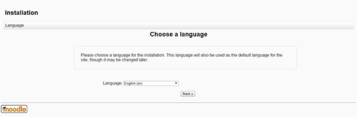
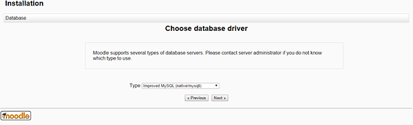
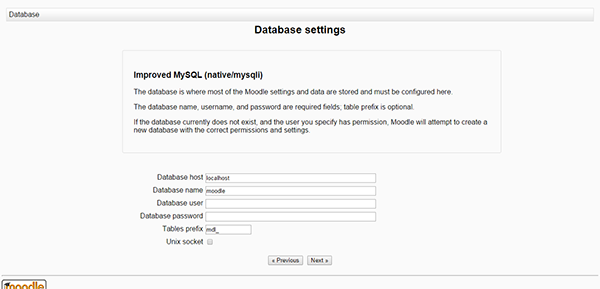

Install and configure Moodle on your LAMP server - Arch Linux, PHP, Applications
Install and configure Moodle on your LAMP server - Arch Linux
Difficulty: 1
Time: 30 minutes
Moodle is an acronym for Modular Object Oriented Dynamic Learning Environment. It is an open-source Course Management System that enables the creation of an online learning site. Moodle has default features such as an easy to use interface, a personalized dashboard, progress tracking, and many others. In administration, Moodle offers customizable site design and layout, secure authentication, mass enrollment, bulk course creation, and easy backup.
It is assumed that you have sudo privileges to perform the following steps. In addition, you need to install and configure LAMP for Arch Linux. If needed, refer to the article: Build a LAMP stack (Linux, Apache, MySQL, PHP) - Arch Linux
Install the required dependencies
- Install curl and GD extensions for Moodle use.
sudo pacman –S curl php-gd php-intl
- Open
/etc/php/php.ini and uncomment the following lines in the configuration file:
sudo vim /etc/php/php.ini
extension=curl.so
extension=gd.so
extension=gettext.so
extension=iconv.so
extension=intl.so
extension=mysqli.so
extension=openssl.so
extension=soap.so
extension=xmlrpc.so
extension=zip.so
- Save and exit the file by pressing the Esc key, typing :wq, and then pressing the Enter key.
- Restart the Apache services to make the changes effective.
sudo systemctl restart httpd
Basic configuration
- Download the Moodle source from the official site.
cd /srv/http
sudo wget http://download.moodle.org/download.php/direct/stable25/moodle-latest-25.tgz
- Extract the downloaded source.
sudo tar xzvf moodle-latest-25.tgz
You will find the new directory added in the folder named moodle.
- To secure Moodle from being accessed with outside writable permission, change the owner to
root, and then change permissions.
sudo chown -R http:http /srv/http/moodle
- Moodle needs a folder for its temporary operations. It shouldn’t be accessed from the web, so move the folder outside of the server web root. To create it in the home directory, use the following command:
sudo mkdir /moodledata
- Make it writeable by the machine.
sudo chown http:http /moodledata
Create a database
- Create blank database for the backend operation.
sudo mysql –u root –p
CREATE DATABASE moodle;
- Exit the MySQL shell.
exit
Install Moodle
- Open the browser, type your public IP or URL of moodle server as http://your server address/moodle.
- After pressing Enter, you will find first step of Moodle installation process.
- Choose a language you want, and then click Next.

- Set the Data directory, that you have created earlier, and then click Next.

- Select a database driver to connect with the database, and then click Next.

To avoid errors, use the driver that the database engine has installed.
- Enter the database credentials to connect with the database, and then click Next.

- If the configuration fails, you will be asked to copy a certain block of text to the config file. This happens mostly because of the lack of ownership to the moodle directory. Make sure you have provided that and you can avoid making changes in the
config.php file.
- After the configuration is complete you will see Server Checks and Installation page click on Continue button on both page.
Update the site profile
- Update the profile for your site, fill the mandatory information fields, and then click Update profile.

- After updating the profile, you will be redirected to the site settings. Enter your Full site name, and then click Save changes.

- After saving the changes, you will be redirected to the Moodle home page, where you can manage your courses and site.
Conclusion
In this article, you learned to install and configure Moodle on your LAMP server with Arch Linux.